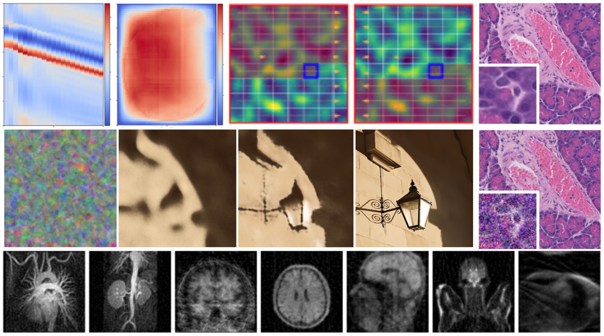
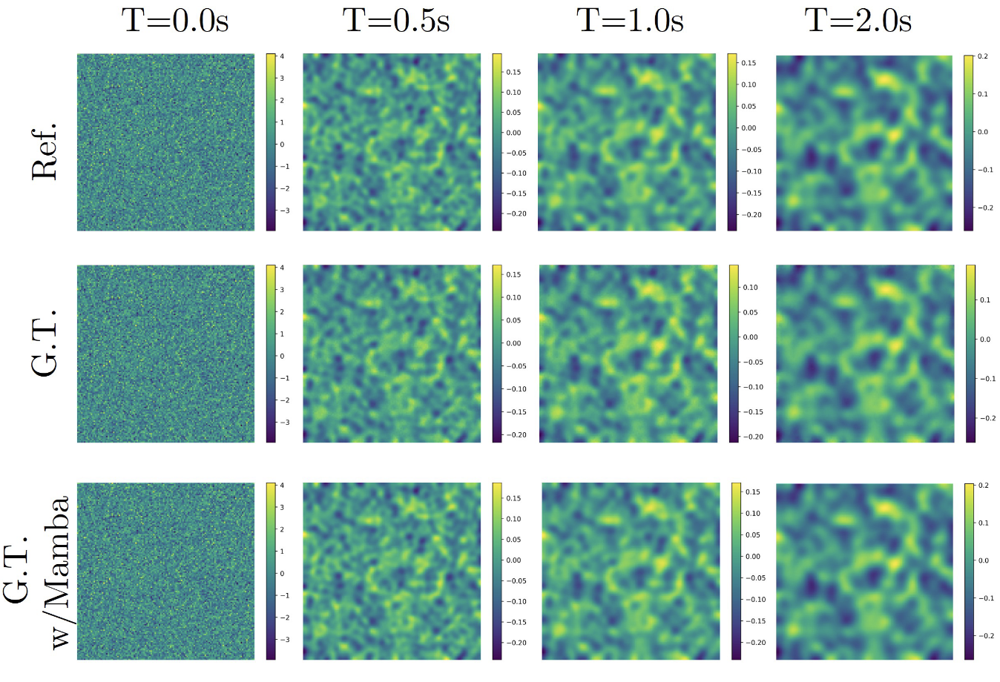
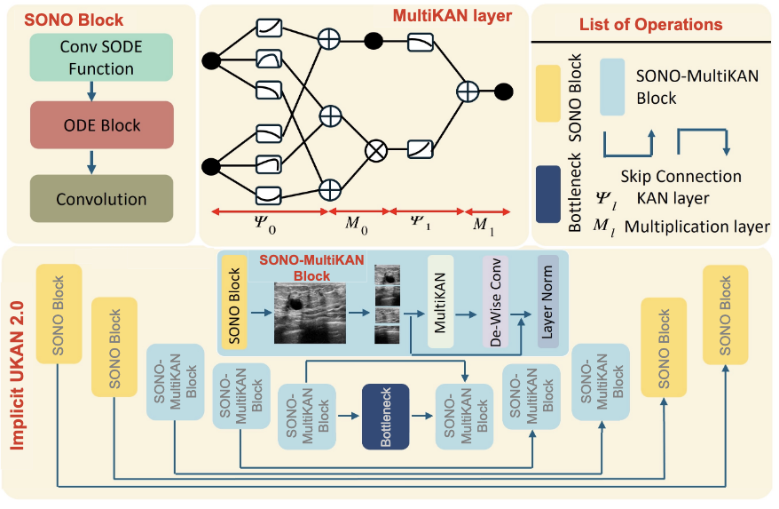
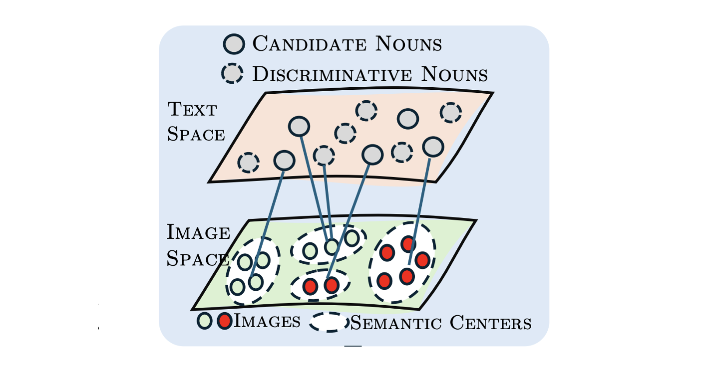
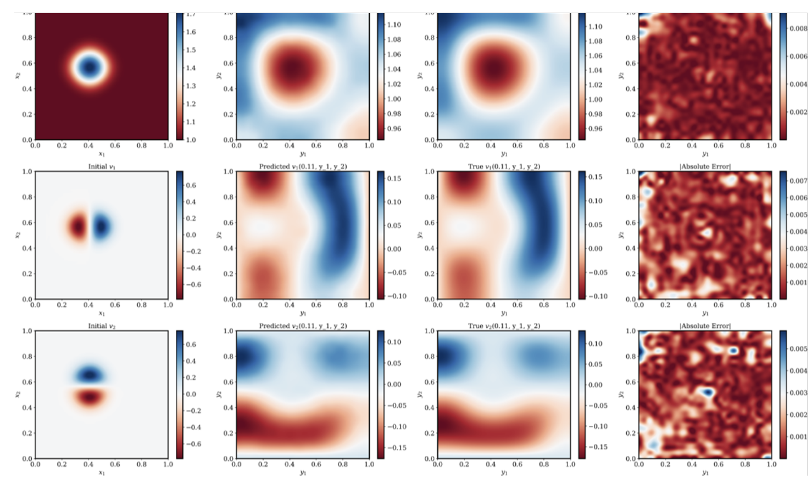
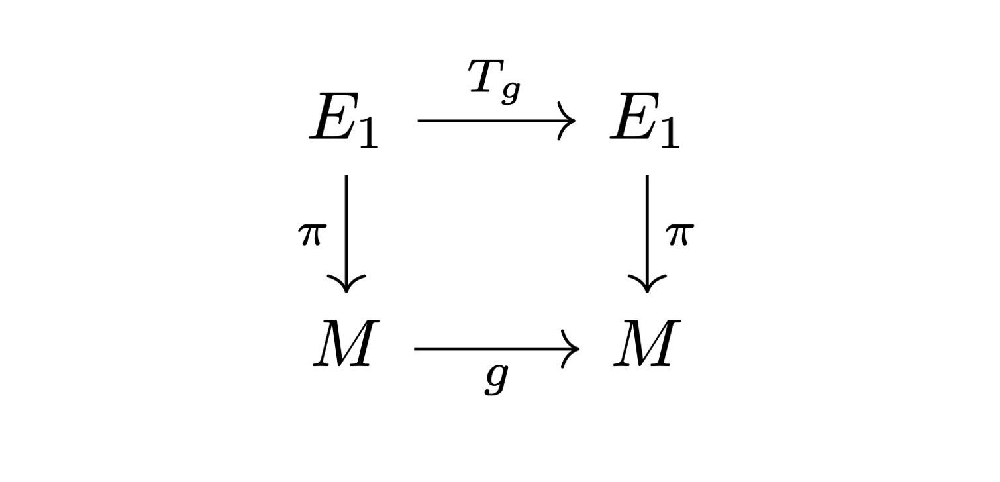
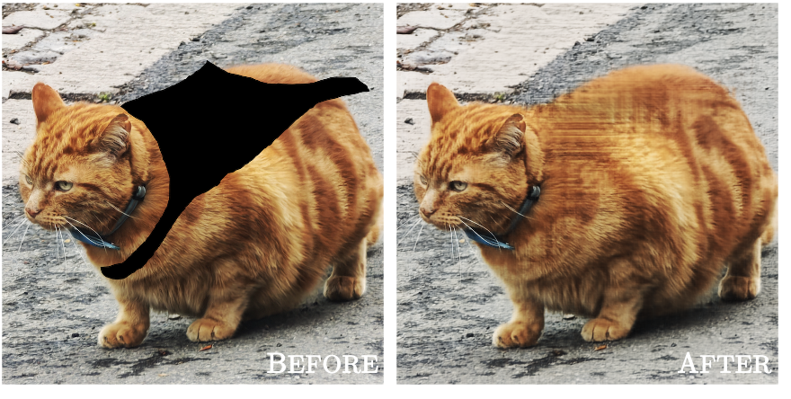
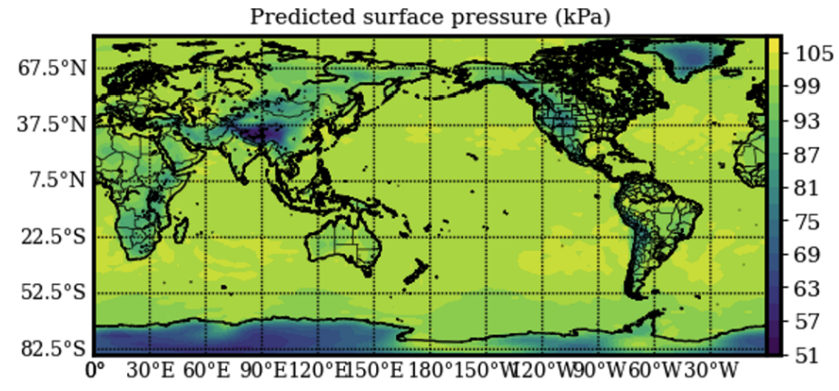
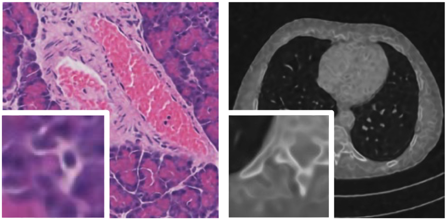

Dushi 2025 Funding Awarded Project

This project focuses on two core research directions in AI for Science (AI4Science), aiming to build a cross-scale intelligent reasoning framework that spans from fundamental scientific modeling to medical image reconstruction.
-
PDE Solving
For the problem of solving partial differential equations (PDEs), the project proposes a series of deep learning methods that emphasize numerical stability, theoretical interpretability, and high accuracy. These methods include differentiable local finite-difference modules, implicit neural representations, and multi-scale grid encoders, enabling fast and accurate PDE solutions. -
Medical Imaging Reconstruction
In the field of medical imaging, the research focuses on unsupervised inverse problems. Building on the concept of Deep Spectral Prior, the project models the image degradation process in the frequency domain to suppress high-frequency noise and improve the reconstruction of structural details.
Through these two complementary research tracks, the project aims to advance intelligent scientific computing and promote practical applications in healthcare and medical imaging.
People
Principal Investigator
Tsinghua University
Publication
|
 |
Mamba Neural Operator: Who Wins? Transformers vs. State-Space Models for PDEs CW Cheng, J Huang, Y Zhang, G Yang, C–B Schönlieb and AI Aviles-Rivero Journal of Computational Physics || Journal || Arxiv-Link |
|
 |
Implicit U-KAN2.0: Dynamic, Efficient and Interpretable Medical Image Segmentation CW Cheng*, Y Zhang*, Y Cheng, J Montoya, C-B Schönlieb, and AI Aviles-Rivero MICCAI 2025 || Arxiv-Link |
|
 |
Training-Free Test-Time Adaptation with Brownian Distance Covariance in Vision-Language Models Y Zhang, C-W Cheng, AI Aviles-Rivero, Z He, L-J Zhang ICASSP 2026 || arXiv-Link || Conference Link |
|
 |
SpectraKAN: Conditioning Spectral Operators C-W Cheng, C-B Schönlieb and AI Aviles-Rivero Arxiv-Link |
|
 |
Product Interaction: An Algebraic Formalism for Deep Learning Architectures H Dong, C-W Cheng and AI Aviles-Rivero Arxiv-Link |
|
 |
Deep Spectral Prior Y Cheng, T Zeng, P Lio, C-B Schönlieb and AI Aviles-Rivero Arxiv-Link || Project Webpage |
|
 |
PDE Solvers Should Be Local: Fast, Stable Rollouts with Learned Local Stencils CW Cheng, B Dong, C-B Schönlieb and AI Aviles-Rivero Arxiv-Link |
|
 |
DNA-Prior: Unsupervised Denoise Anything via Dual-Domain Prior Y Cheng, C-W Cheng, J Denholm, T Lima, J A Montoya-Zegarra, R Goodwin, C-B Schönlieb and AI Aviles-Rivero Arxiv-Link |
Activities
Below are the sessions and activities organised by our group, focusing on machine learning, scientific computing, and medical imaging.
AI4Science Beijing Meetup 2025 – Learned Partial Differential Equations

Date: 28 June 2025
Location: Tsinghua University
This meetup explores how machine learning techniques can learn and solve partial differential equations (PDEs), enabling new scientific discoveries across physics, biology, and engineering. Topics include neural operators, physics-informed neural networks (PINNs), and data-driven modelling for scientific applications.
DLMed25 Winter School 2025 – Medical Imaging in the Deep Learning Era

Date: 5–6 December 2025
Format: Online Winter School
This winter school focuses on deep learning methods for medical imaging, covering recent breakthroughs, open challenges, and emerging research opportunities in AI-driven healthcare.